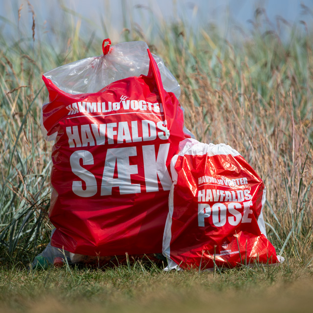

Bliv Havmiljøvogter
Det er nemt at blive Havmiljøvogter. Den nemmeste måde er ved at hente vores gratis app fra App Store eller Google Play. App’en gør det muligt at registrere affald, bestille materialer, se statistikker og melde oliefund.
Du kan også tilmelde dig direkte på havmiljøvogter.dk eller kontakte os via Facebook.
Tilmeld dig nu 